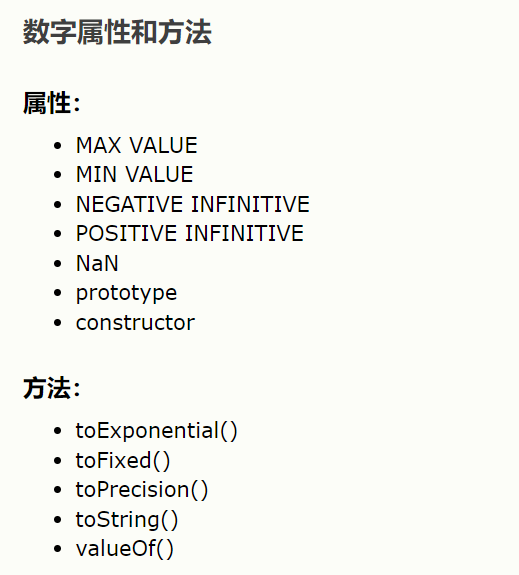
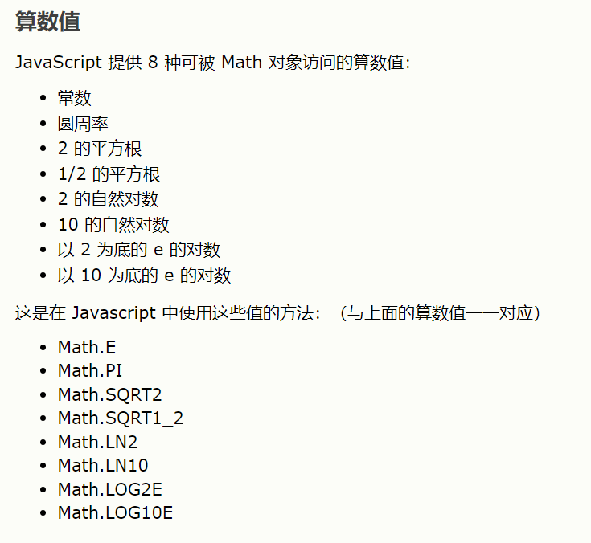

创建对象
八进制和十六进制
如果前缀为 0，则 JavaScript 会把数值常量解释为八进制数，如果前缀为 0 和 "x"，则解释为十六进制数。

完整的Number对象参考手册
计算字符串的长度：
为字符串添加样式：
indexOf()方法：来定位字符串中某一个指定的字符首次出现的位置
match()方法：查找字符串中特定的字符，如果找到则返回这个字符
replace方法：替换字符串中的字符
完整的JS String对象参考手册
返回当日的日期和时间:Date()
返回从1970年1月1日至今的毫秒数:getTime()
设置具体的日期：setFullYear
将当日的日期（根据UTC）转换为字符串
使用getDay()和数组来显示星期，而不仅仅是数字
显示一个钟表
操作日期
完整的Date对象参考手册
创建数组：for/in声明来循环输出数组中的元素
合并两个数组：concat()方法
用数组元素组成字符串：join()方法
数组排序：sort()方法（文字排序、数值排序都可以）
完整的Array对象参考手册
完整的Boolean对象参考手册
四舍五入保留到整数：round()方法
使用0-1之间的随机数：random()
使用0-10之间的随机数:floor()方法和random()方法
两个数中较大的数：max() 两个数中较小的数：min()

完整的Math对象参考手册
什么是RegExp
RegExp 是正则表达式的缩写。
当您检索某个文本时，可以使用一种模式来描述要检索的内容。RegExp 就是这种模式。
简单的模式可以是一个单独的字符。
更复杂的模式包括了更多的字符，并可用于解析、格式检查、替换等等。
您可以规定字符串中的检索位置，以及要检索的字符类型，等等。
RegExp对象有3个方法：text()、exec()、compile()
test()方法：检索字符串中的指定值，返回true或false
exec()方法：检索字符串中的指定值，返回是被找到的值，如果没有则返回null
compile()方法：用于改变RegExp，既可以改变检索模式，也可以添加或删除第二个参数。
完整的RegExp对象参考手册